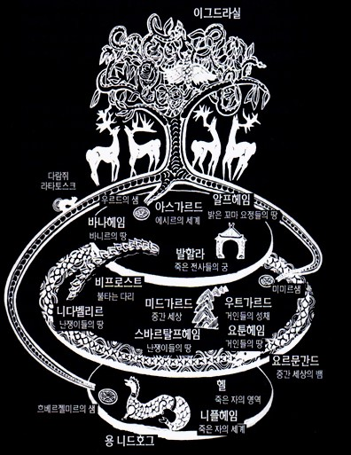

20160915 김태호
<기획 아이디어>
북유럽 신화에서 인상 깊은 장면들과 캐릭터들을 각각 글과 그림으로 표현하여 보여주고, 그에 맞는 음악도 작곡하여 재생함으로써 생동감 있는 웹 콘텐츠를 만든다.
가능한 구현 방식들
- 책 형식 (한 방향으로 전개되는 스토리텔링 형식)
- 웹 뮤지엄 형식 (방향 상관 없이 선택해서 볼 수 있는 전시 형식)
<인상 깊은(활용해 볼만한) 캐릭터와 장면들>
- 로키의 아내인 '앙그르보다'와 그 자식인 늑대 '펜리르'
- '발더'와 그의 죽음을 예언한 예언자 '발라', 그리고 '발라'의 죽음
- '지구르트'와 '브륀힐트', '그림힐트'와 '구드룬' 그리고 그들의 이야기
- 수탉들이 라그나로크의 시작을 알리는 장면
- 라그나로크로 인해 모든 것이 무너지지만 그 뒤에 새로운 시대가 시작되는 장면
→ 전체적으로 보면 라그나로크의 원인들과 징조들, 그리고 라그나로크 자체와 그 뒤의 이야기로 연결됨
<글로 표현하기>
일부 캐릭터나 장면들은 원작을 변형하여 새로 쓰고, 또다른 일부 캐릭터나 장면들은 원작 내용을 가져와서 활용
<그림으로 표현하기>
가능한 구현 방식들
- 기존의 이미지들을 가져와서 활용
- 캐릭터들과 배경 이미지를 직접 디자인
- 기존의 이미지들과, 직접 만든 이미지를 혼용
<음악으로 표현하기>
캐릭터와 스토리의 분위기에 맞는 음악을 작곡

북유럽 신화의 세계관.
북유럽 신화에 대해서 설명해 주는 유튜브 영상